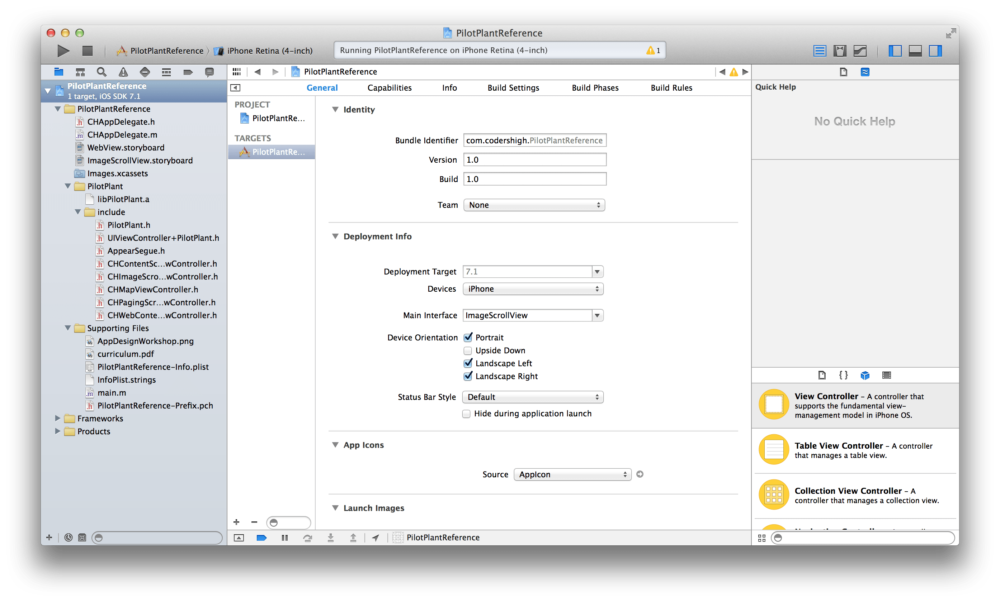
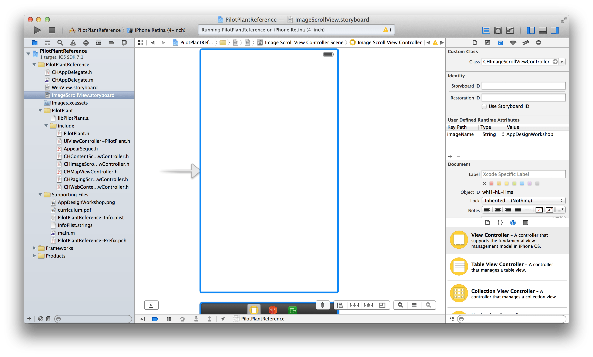
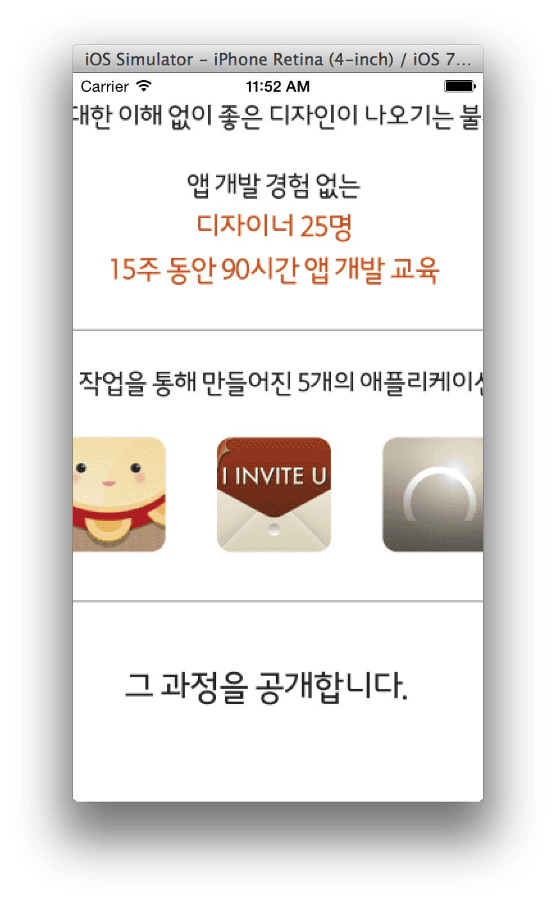

큰 이미지 표시하기
레퍼런스를 확인할 수 있는 샘플 프로젝트를 제공해 드리고 있습니다. 샘플 프로젝트를 이용해 기능과 동작을 확인하신 후 직접 만들어 보시기 바랍니다.
큰 이미지를 표시하려면 스크롤 뷰 안에 이미지 뷰를 넣고 이미지의 크기에 따라 스크롤 뷰의 설정을 해 줘야 합니다. CHImageScrollViewController를 이용하면 이미지 이름을 입력하는 것 만으로 이미지가 스크롤 되도록 할 수 있습니다.
실행할 스토리보드 파일을 선택합니다. 프로젝트 타겟의 General 설정사항 중 Main Interface에 ImageScrollView 스토리보드를 선택합니다.

ImageScrollView 스토리보드를 선택합니다.
뷰 컨트롤러의 이름을 CHImageScrollViewController로 변경한 뒤, User Defined Runtime Attributes 항목에 'imageName' 키를 만들고 원하는 이미지 이름을 입력합니다. 사용가능한 이미지 타입은 png 입니다. 샘플에서는 AppDesignWorkshop.png 파일을 이용했습니다.

CHImageScrollViewController에 이미지 이름을 입력합니다.
Run 버튼을 눌러 실행해 보면, 지정한 이미지가 스크롤 되는 것을 확인할 수 있습니다.

큰 이미지가 스크롤됩니다.